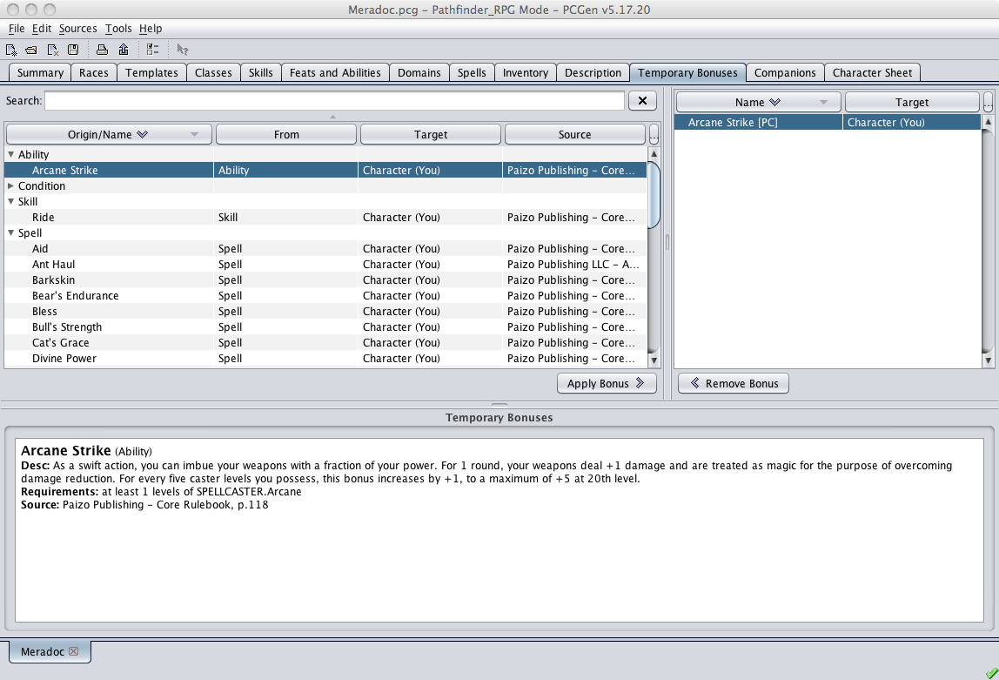
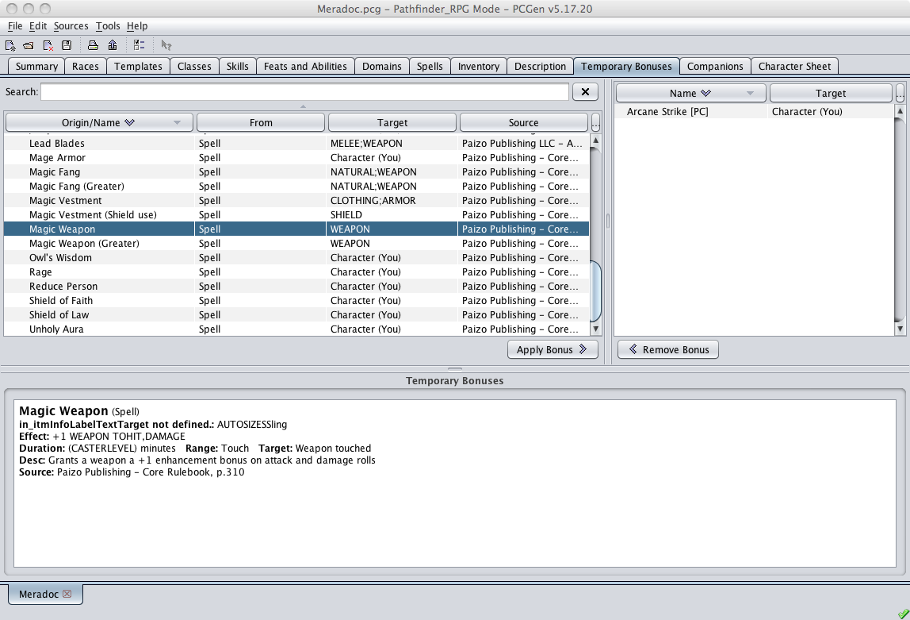
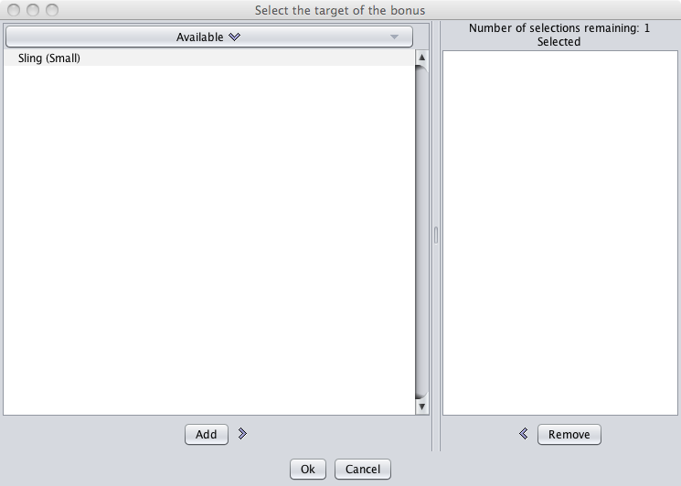
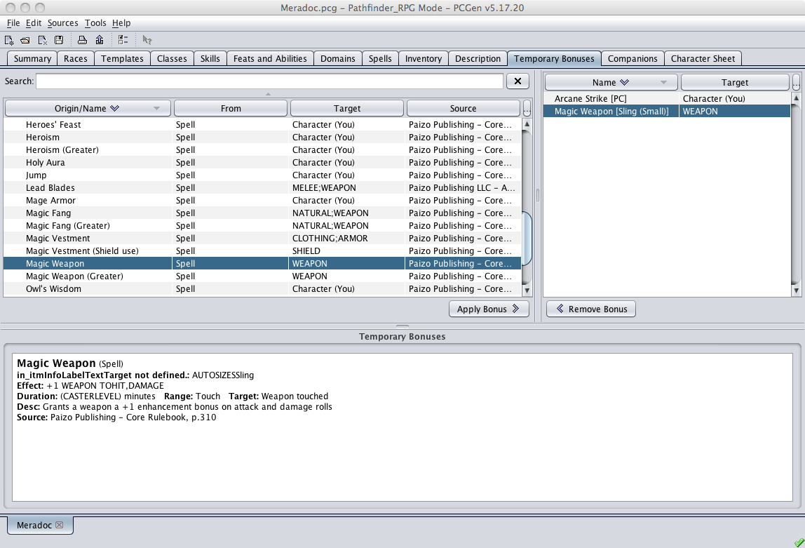

The Temporary Bonus Tab is used to apply conditional bonuses to your character such as Spell effects, bonuses due to Rage, having a familiar within 5 feet of your character and more. Normally PCGen will only apply absolute bonuses to your character, for example if you you equip your character with a Belt of Giant Strength he gets a bonus to his strength score because wearing the belt is the only condition that needs to be met. If however your character is of a class that gets a +2 to Hide but only when he's in a forest environment then PCGen will not apply the bonus to the Skill on the character sheet although there may be an entry in a Special Ability noting this bonus. This is where the Temporary Bonus Tab comes into play, these conditional bonuses can be applied and removed from characters as needed and the bonuses will then show up on the character sheets. You could then for example apply the Rage bonuses and print out a second character sheet with these bonuses applied saving you the time of manually adding these in.

The panel on the top left displays all the conditional bonuses available to the character while the panel on the top right displays the conditional bonuses currently applied to the active character.

To apply one of the conditional bonuses, select the bonus and then press the Apply Bonus > button. If the target of the bonus is the PC, the bonus title will appear in the right pane. If the bonus applies to a piece of gear carried by the character, e.g. a weapon or piece of armor, the target selection dialog will appear.

Select the target of the bonus and click on the Add button. The bonus and the appropriate descriptive information will appear in the bottom panel, listing details of the bonus. Now click the Ok button and if the piece of equipment which has had the bonus applied to it is "Equipped", the temporary bonus will be applied to your character and appear on the output sheet.

Removing the bonus from the target is as simple as selecting the bonus in the right-hand pane and clicking the < Remove Bonus button.
A conditional bonus can be added to a Feat, Spell, Item, Class or Template by including a BONUS tag with a PREAPPLY tag appended. Any bonus with a PREAPPLY tag on it will show up in (and only in) the Temporary Bonus tab. See the tag dictionary entry on PREAPPLY for details on how to use this tag. Also see the tag TEMPDESC which provides a description of the bonus and the circumstances needed for it to be valid.
An example of what is required to get this tab to work is:
The Rapid Shot feat in srdfeats.lst would be modified to:
BONUS:WEAPON|TOHIT|-2|PREAPPLY:Weapon,Ranged
BONUS:WEAPON|ATTACKS|1|PREAPPLY:Weapon,Ranged
Rapid Shot would then appear in this tab as an available option.
A BONUS in a Spell, Feat or Template with a PREAPPLY:ANYPC tag will always show up in the Spell, Feat or Template lists of the Temporary Bonus Sub-Tab. This accounts for spells that can be cast on a character and Feats and Templates that can be used to hold a conditional bonus any character can apply without having the Feat or Template. This allows for several things:
You can use #2 as a Hidden feat or template that is used to "store" the bonuses for something else. Here is an example template:
Alter Self (Troglodyte)
REMOVABLE:YES
VISIBLE:NO
BONUS:COMBAT|AC|6|TYPE=NaturalArmor|PREAPPLY:ANYPC
TEMPDESC:Alter Self spell applied to a
Medium sized creature to transform into a Troglodyte
You do not have to apply this template to a PC, I can just add it as a Bonus on the Temporary Bonus tab.
Some Spells, like Bull's Strength for example, provide a variable bonus based on a die roll (1d4+1). These spells can be coded to accept user input by adding a choose tag. Take Bull's Strength as an example.
The Bull's Strength spell in srdspells.lst would be modified to:
BONUS:STAT|STR|%CHOICE|PREAPPLY:ANYPC|TYPE=Enhancement
CHOOSE:NUMBER|MIN=2|MAX=5|TITLE=Roll
1d4+1
When Bull's Strength is applied to the character a chooser window will pop up titled 'Roll 1d4+1' which asks for a number between 2 and 5.
Spells that grant bonuses dependent on the spellcasters level can be treated in a similar manner. For this example we will use Greater Magic Weapon, which grants a bonus of +1 for every 3 casterlevels up to 5.
The Greater Magic Weapon spell in srdspells.lst would be modified to:
BONUS:COMBAT|TOHIT,DAMAGE|(((%CHOICE/3).TRUNC)MAX1)MIN5|PREAPPLY:Weapon|TYPE=Enhancement
CHOOSE:NUMBER|MIN=3|MAX=20|TITLE=Choose
Spell Caster Level
When Greater Magic Weapon is applied to a character's weapon a chooser window will pop up titled 'Choose Spell Caster Level' which asks for a number between 3 (the minimum casterlevel) and 20. The bonus is calculated based on the casterlevel and applied to the weapon.
Feats and Templates can be treated in the same manner. Here is an example feat:
Variable Spell Resistance
VISIBLE:No
TYPE:TemporaryBonus
BONUS:MISC|SR|%CHOICE|PREAPPLY:ANYPC
CHOOSE:NUMBER|MIN=1|MAX=40|TITLE=Choose
Spell Resistance
TEMPDESC:Assign Spell Resistance to a
character
The PC does not need to select this feat, you simply apply the bonus to the PC on the Temporary Bonus tab.